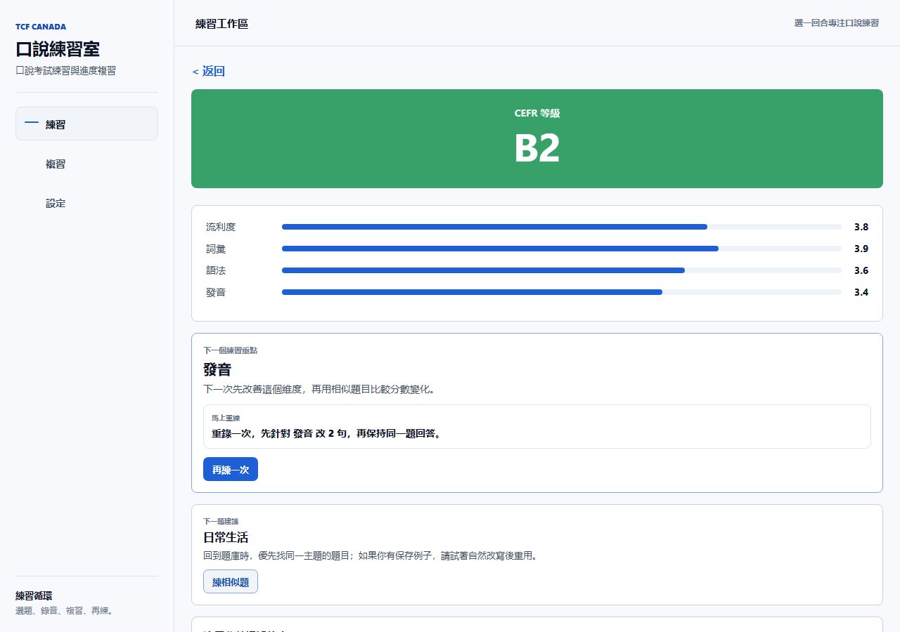

Choose level
Learners select a target such as A1, A2, B1, or B2 before practice.
 Canada-focused French speaking preparation
Canada-focused French speaking preparation
AI speaking coach for French exam preparation
SpeakCanada AI helps independent learners preparing for TCF Canada choose a target level, answer realistic speaking questions, receive interactive follow-up guidance, and return to focused practice.
Testing QR reserved
TestFlight QR reserved
Independent study product. AI feedback is learning guidance, not an official score.

Product workflow
Learners select a target such as A1, A2, B1, or B2 before practice.
Realistic speaking questions keep each practice round concrete and focused.
AI-guided review highlights clarity, structure, fluency, and useful follow-up questions.
Useful practice items can be saved for targeted review instead of one-time practice.
Speaking improvement loop
SpeakCanada AI is designed for learners who practice alone and need the next question after each response. The feedback highlights what to keep, what to simplify, and which follow-up angle to try in the next attempt.


Practice, review, repeat
The experience stays focused on the learner's next useful action: pick a speaking question, answer in French, review the feedback, save what matters, and come back to weak areas.
Privacy and safety
This page presents the product experience without exposing source code, credentials, internal prompts, operational details, release artifacts, or private user data.
Feedback is learning support, not an official exam result or guarantee.
Public materials avoid sensitive implementation and account details.
SpeakCanada AI is not affiliated with France Education International, any official exam provider, or any government agency.